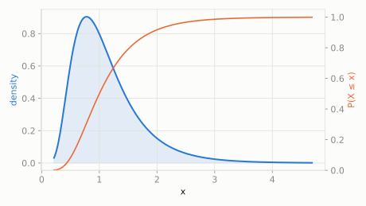

House sizes in a neighborhood: most houses are modest, a fair number are a bit bigger, and a rare few are giant mansions -- never negative, and skewed toward the big side.
What fraction of houses are bigger than double the 'typical' size?
scipy.stats.lognorm
If a quantity's *logarithm* is Normally distributed, the quantity itself is Log-normal: always positive, with a long right tail. This is what happens when many small effects multiply together rather than add -- exactly the pattern behind house prices, incomes, and stock prices, where a few outcomes end up enormous.
| parameter | default used here | meaning |
|---|---|---|
s | 0.5 | sigma of the underlying normal (shape) |
House sizes in a neighborhood: most houses are modest, a fair number are a bit bigger, and a rare few are giant mansions -- never negative, and skewed toward the big side.
What fraction of houses are bigger than double the 'typical' size?
scipy.statsimport scipy.stats as stats
import numpy as np
dist = stats.lognorm(s=0.5)
print('P(size > 2x typical):', round(dist.sf(2), 4))
print('median size:', round(dist.median(), 4))